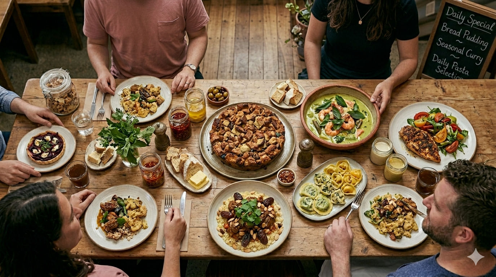

AI-generated Image
AI & Content Disclaimer:
This website is a fictional project created for educational and demonstration purposes only. Botanic Bloom Bistro is not a real business, and any resemblance to actual
restaurants, locations, or services is purely coincidental.
Images and some written content on this site are generated using artificial intelligence (AI). While
efforts have been made to ensure quality and realism, AI-generated content may contain inaccuracies, inconsistencies, or fictional elements and should not be interpreted
as factual or representative of real-world offerings.
This site does not provide real services, accept reservations, or conduct business transactions. The creator
assumes no responsibility or liability for any actions taken based on the content displayed on this website.

AI-generated image (for demonstration purposes)
Discover Botanic Bloom Bistro, Oaksvale's go-to spot where every moment tastes like the good life. Nestled at 24 Garden Row Avenue in the vibrant heart of the town,
we’re more than just a restaurant — we’re your café for the morning rush, your lunch escape, your dinner destination, and your favorite bar all in one.
Sip rich,
locally roasted coffee as the city wakes up, savor island-fresh flavors for lunch, or unwind at night with expertly crafted cocktails and a warm, lively atmosphere.
Whether you’re traveling with family, sealing a business deal, celebrating in style, or just looking for a great night out, Botanic Bloom Bistro serves up the perfect blend of
island charm and modern comfort.
Botanic Bloom Bistro
24 Garden Row Avenue, Oaksvale
(555) 555-5555
(333) 333-3333
info@botanicbloombistro.org
We love connecting with our guests — whether you’re a local looking for your next favorite meal or a visitor eager to taste the flavors of Oaksvale. Our team is ready to make your experience unforgettable. Get in touch today — we can’t wait to welcome you!”
Botanic Bloom Bistro, 24 Garden Row Avenue, Oaksvale
You can also contact us by phone (555) 555-5555 or email info@botanicbloombistro.org, or you can send us a reservation request here: